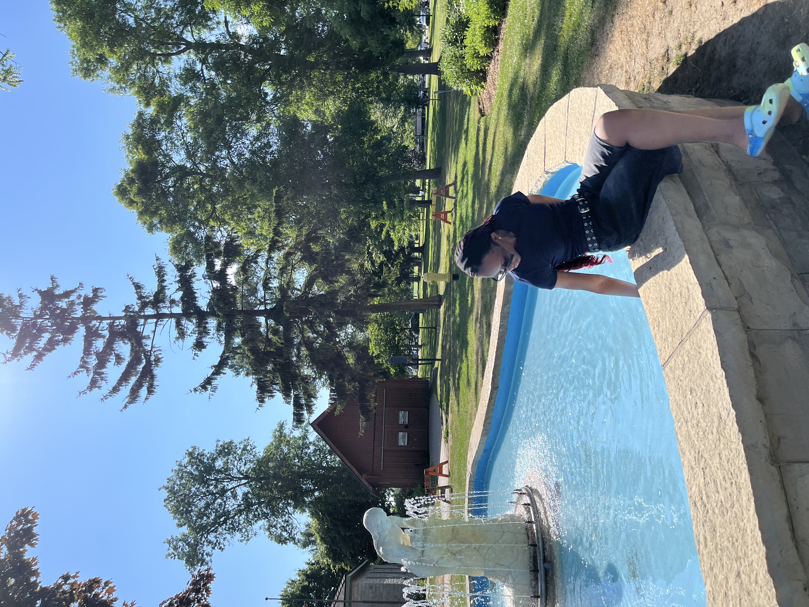
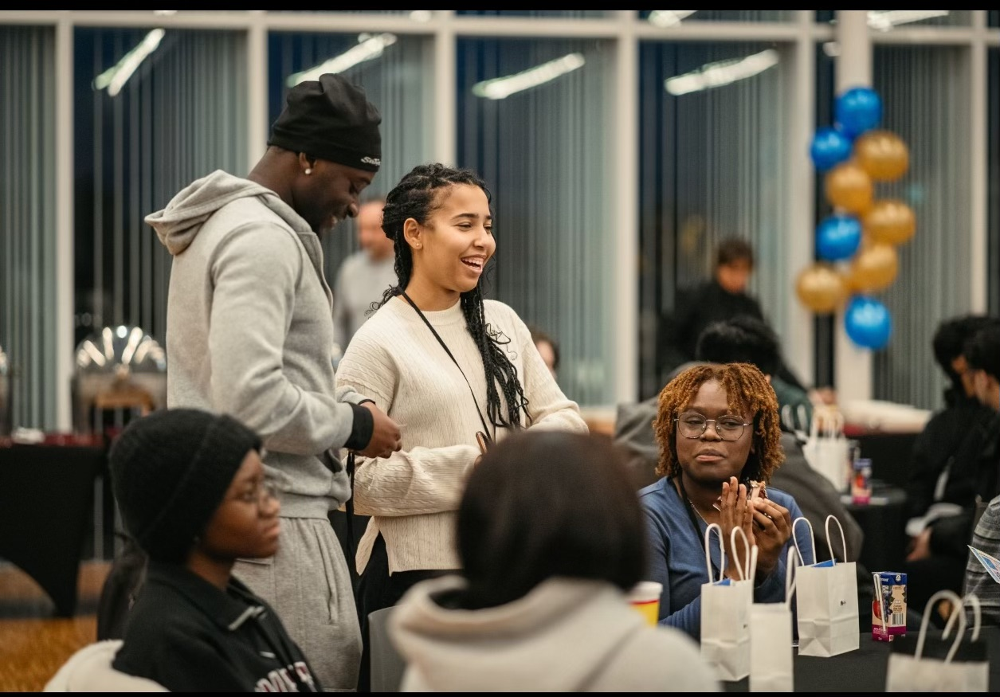

A first-year undergraduate student from Nigeria, currently studying Computer Science in McMaster University in Hamilton, Ontario. I am interested in web development and enjoy building clean, responsive and user-focused websites. I am interested in learning more about JavaScript, UI/UX design, and building interactive, user-friendly web applications.
I enjoy spending time with my cat, photographing nature and sports (especially soccer). In my free time I cook, bowl and binge-watch shows.
I chose Computer Science because I enjoy problem-solving and creating things that people can interac with. I love being able to interact with the computer beyond the average scope; it is a great way to channel my creativity. Web development allows me combine these two aspects and give people something to enjoy!
As a co-op student, I have had to gain experience through different means either volunteering or summer jobs to build my resume. These experiences have strengthened my ability to collaborator effectively, follow procedures and contribute reliably within organized settings.

